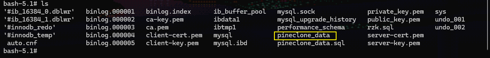
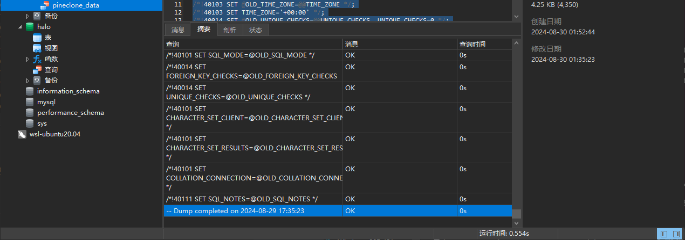

Mysql
通过docker-compose.yml部署：在用户根目录下创建mysql根目录并且创建compose文件：
mkdir -p ~/mysql/data && echo "" > ~/mysql/compose.yml && vim ~/mysql/compose.yml
定义三个挂载卷，对容器的数据、配置、日志进行持久化存储
version: '3.8'
services:
db:
container_name: mysql
hostname: mysql
image: mysql:9.0
restart: always
environment:
MYSQL_ROOT_PASSWORD: 1234
ports:
- 3306:3306
volumes:
- ./data:/var/lib/mysql
- ./conf:/etc/mysql/mysql.conf.d
- ./logs:/logs
healthcheck:
test: [ "CMD", "mysqladmin" ,"ping", "-h", "localhost" ]
interval: 5s
timeout: 10s
retries: 10
docker compose up -d
关于数据迁移：
主要是将docker容器形式的mysql数据库当中的数据迁移，mysql内置了将数据库、表、数据转换成为.sql文件的功能，通过转移.sql文件，将数据重新部署到新的mysql数据库上面，操作步骤：
docker exec -it mysql /bin/bash # 进入mysql容器
docker compose exec mysql /bin/bash # compose形式
进入mysql数据所在的目录，
cd /var/lib/mysql/
这个目录下构建数据对应的sql文件，如果/var/lib/mysql已经被挂载到容器外，那么保存之后就可以在外部将数据文件进行传输
通过ls命令来查看有哪些数据需要保存，数据文件和数据库名相同：
这里保存pineclone_data到.sql文件，执行命令：
mysqldump -uroot -p pineclone_data > pineclone_data.sql
然后键入管理员命令，即可在当前目录生成数据sql文件，将这份文件迁移到新的数据库当中执行即可
导入数据到新的数据库之前，数据库本身还是要自己建立的